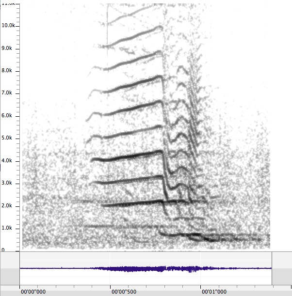

A Listening Gallery of Sound Recordings and Spectrographs
Researchers are currently aiming to “teach” artificial intelligence systems to recognize the sounds of resident killer whales in order to develop a warning system for preventing ships from fatally striking endangered orcas off British Columbia's coast.
Data used to train artificial intelligence systems come from various sources: from hydrophone nodes located near shipping lanes, to the contributions of citizen scientists and projects like Orcasound and Whalesound.ca.
This website shares a curated collection of orca acoustics and annotations which represent the type of samples used in machine learning datasets. The samples here demonstrate the complexity of communication within and between pods.
These samples have been gathered through decades of research by Dr. John Ford and James Pilkington (Fisheries and Oceans Canada's Pacific Biological Station) and their colleague Volker Deecke (University of Cumbria).
Below is a sample spectrograph and audio file from the call catalogue.
